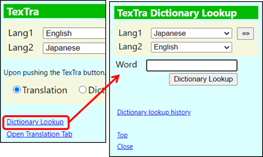
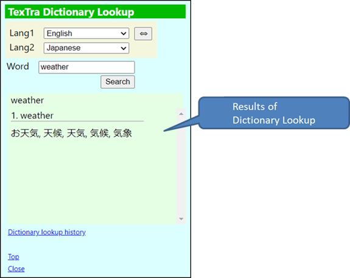
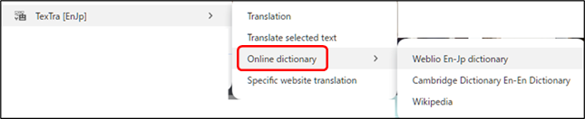
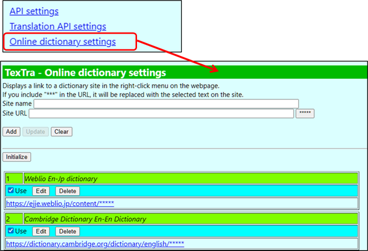

Dictionary Lookup
Look up the input text in the dictionary.


・ Open dictionary
site
Opens
a dictionary site and displays information about the text selected on the
webpage.

Settings
You
can add other sites in the settings
screen.

If
you include "*****" in the site URL,
the
text selected in the browser will be inserted into that
part.
Example
Set
the “Site URL” to "https://dic.com/?target_word=*****".
When
you right-click on a page and select
"TexTra
> Dictionary Sites > [Your Added
Site]",
if
you select the text "apple" on the site,
a
new tab will open with "https://dic.com/?target_word=apple".